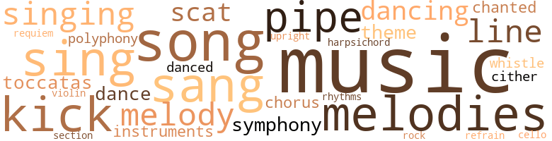
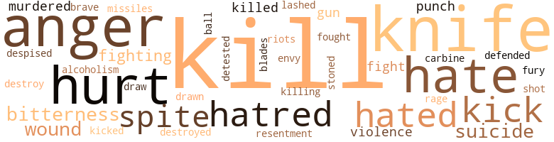
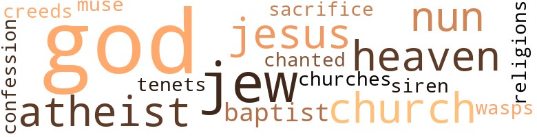

The People One Knows, by Boles, Robert E. (1964)
62 music-related terms matched in this text.
Most frequent terms in this topic: music (10); singing (3); songs (3); melody (3); sing (3)
cello.n.01
Definition: a large stringed instrument; seated player holds it upright while playing
| word | sentence |
|---|---|
| cello | So , he works here , he plays his cello in the afternoon when he is alone , and he reads and listens to the radio . |
chorus.n.01
Definition: any utterance produced simultaneously by a group
| word | sentence |
|---|---|
| chorus | He wanted to be fleshless so that he could feel , so that life ripped and raced through him like a thousand joyous voices of a chorus of thousands of faces . |
dance.v.02
Definition: move in a pattern; usually to musical accompaniment; do or perform a dance
| word | sentence |
|---|---|
| dancing | The streets were wet and winter warm with sunlight dancing in water filled stone pockets . |
dance.v.03
Definition: skip, leap, or move up and down or sideways
| word | sentence |
|---|---|
| dancing | He was scratching the area between his buttocks while dancing backwards towards Harris . |
| dance | He wanted them to dance . |
| danced | They had danced a lot and had perspired and were still warm and moist . |
harpsichord.n.01
Definition: a clavier with strings that are plucked by plectra mounted on pivots
| word | sentence |
|---|---|
| harpsichord | A dreadful harpsichord or something . |
kick.v.04
Definition: kick a leg up
| word | sentence |
|---|---|
| kick | I 'd like to kick you right in the ass . |
| kick | He felt its legs kick to break away from his fingers , and he watched its wings catch the air . |
| kick | To others , he is like a dog - someone to pat on the head , to kick , to neglect . |
music.n.01
Definition: an artistic form of auditory communication incorporating instrumental or vocal tones in a structured and continuous manner
| word | sentence |
|---|---|
| music | He wanted the world to be splashed with forbidden colors , he wanted to deform himself and laugh to the music of Vivaldi . |
| music | All that he was able to feel was an infinite sadness as light as the water music in the sink ; perhaps lighter . |
| music | The center is silence , like the silence on which music is based . |
| music | Sometimes the music will be too fast for you to notice or even feel the presence of silence . |
| music | There was a series of clicks , then a whirr and then music - ancient double-time frantic jazz , melodramatic and impotent . |
| music | " Maybe it 's because you 're a traitor and I 'm sitting here in my pajamas drinking coffee and listening to you and music that was played before I was born . " |
| music | The room needed music . |
| music | A cloud passed over the sun and the sun was at once like a note of ancient music written in gold on a piece of parchment . |
| music | A jukebox played Western music . |
| music | " . . . fifteen minutes of classical music , fifteen minutes of rock and roll . . . " She had smiled at him . |
musical_instrument.n.01
Definition: any of various devices or contrivances that can be used to produce musical tones or sounds
| word | sentence |
|---|---|
| instruments | He wanted to see brass instruments . |
pipe.n.04
Definition: a tubular wind instrument
| word | sentence |
|---|---|
| pipe | They turned a corner and bumped into a short man with a pipe and beret . |
| pipe | He wished to wave again to the man on the barge , to have Emilienne step away from him to allow an old woman to pass between them , to have a short man with a pipe and beret bump into them and say to him , Pardon , monsieur , and walk quickly on . |
| pipes | He wished that he could have lived the day over again to have made it as pure and as simple as a line drawing depicting the Great God Pan , his pipes , a nymph and wrestlers , with emotions and roles as simple as the supple lines of bodies , reeds and stones ; he wished that he had worked during the day , hard , so that he would have deserved what would have come afterwards - playing with the men , Beddis , Hausner , Raoul , getting drunk with them , fighting with them , singing with them , and then , eating , and afterwards , love to be shared with Emilienne , and sleep with her until the sun beckoned them to finger away the dry crystals in the corners of their eyes , hold each other a few minutes more against dry warm breasts with the weightless arms of morning , and then begin again a day . |
polyphony.n.01
Definition: music arranged in parts for several voices or instruments
| word | sentence |
|---|---|
| polyphony | There was the silence , the polyphony of little sounds , of coughs . |
refrain.n.01
Definition: the part of a song where a soloist is joined by a group of singers
| word | sentence |
|---|---|
| refrain | It was like a refrain in his ears . |
requiem.n.02
Definition: a musical setting for a Mass celebrating the dead
| word | sentence |
|---|---|
| requiem | It was a fitting requiem . |
rhythm.n.04
Definition: the arrangement of spoken words alternating stressed and unstressed elements
| word | sentence |
|---|---|
| rhythms | And now he was on a street with Emilienne , walking , their bodies rubbing and bumping together as they walked in slightly different rhythms , listening to the intricate pattern of their shoes on the stone . |
rock_'n'_roll.n.01
Definition: a genre of popular music originating in the 1950s; a blend of black rhythm-and-blues with white country-and-western
| word | sentence |
|---|---|
| rock | " . . . fifteen minutes of classical music , fifteen minutes of rock and roll . . . " She had smiled at him . |
scat.n.01
Definition: singing jazz; the singer substitutes nonsense syllables for the words of the song and tries to sound like a musical instrument
| word | sentence |
|---|---|
| scat | then strutted back to his scat . |
| scat | Saul slid into the scat aware of the newness of the clothes that he had bought . |
section.n.01
Definition: a self-contained part of a larger composition (written or musical)
| word | sentence |
|---|---|
| section | He put the knife back on the ledge and took the middle section of the tray and replaced it in the drawer . |
sing.v.02
Definition: produce tones with the voice
| word | sentence |
|---|---|
| sing | He was waiting for the cuckoo birds to sing . |
| sang | They sang every night . |
| sang | They sang when he was on the concrete walkway . |
| sang | While she sang , he had thought that it would be best for her to die while very young , while singing , while content . |
| sing | He was embarrassed , and not knowing what to say , smiled back at her and said , " You . . . you sing very well , " as if he were speaking in a foreign tongue that he was unsure of . |
| sing | And there , he would teach himself how to sing . |
singing.n.01
Definition: the act of singing vocal music
| word | sentence |
|---|---|
| singing | On the flimsy porch of one house , a little girl , her hair tightly braided , was singing to a doll . |
| singing | While she sang , he had thought that it would be best for her to die while very young , while singing , while content . |
| singing | He wished that he could have lived the day over again to have made it as pure and as simple as a line drawing depicting the Great God Pan , his pipes , a nymph and wrestlers , with emotions and roles as simple as the supple lines of bodies , reeds and stones ; he wished that he had worked during the day , hard , so that he would have deserved what would have come afterwards - playing with the men , Beddis , Hausner , Raoul , getting drunk with them , fighting with them , singing with them , and then , eating , and afterwards , love to be shared with Emilienne , and sleep with her until the sun beckoned them to finger away the dry crystals in the corners of their eyes , hold each other a few minutes more against dry warm breasts with the weightless arms of morning , and then begin again a day . |
song.n.01
Definition: a short musical composition with words
| word | sentence |
|---|---|
| songs | He wanted the cuckoo birds to abandon their songs and trill rapturous liturgies . |
| songs | He wanted to become one with all of the songs and moods of the world . |
| song | - When the woman , taken on for an instant , terrifies him , Love , the call of life and song of action , They come : the green Muse and ardent Justice , To tear him to pieces with their august obsession . |
| songs | To you who are ripe in love and hear the green songs of seasons past He had been walking solitarily along the beach between the water and rows of shells that had been left at high tide . |
symphony.n.01
Definition: a long and complex sonata for symphony orchestra
| word | sentence |
|---|---|
| symphony | A symphony of dead flowers and partridge feathers . |
theme.n.03
Definition: (music) melodic subject of a musical composition
| word | sentence |
|---|---|
| theme | The visionless theme paraded in him . |
toccata.n.01
Definition: a baroque musical composition (usually for a keyboard instrument) with full chords and rapid elaborate runs in a rhythmically free style
| word | sentence |
|---|---|
| toccatas | He had wanted to hear organs playing terrible toccatas and fugues . |
tone.v.01
Definition: utter monotonously and repetitively and rhythmically
| word | sentence |
|---|---|
| chanted | They chanted the magic words of " Voyelles " together and searched for each other in his words . |
tune.n.01
Definition: a succession of notes forming a distinctive sequence
| word | sentence |
|---|---|
| melodies | Then life will play around it like melodies . |
| melodies | When you are as sad as soft distinct melodies , you will find it easily . |
| lines | When the tide went out - a muscular hand rubbed across a forehead - the sand , the brow , wrinkled by deep smooth gouges , not fine lines , was young and tired from too many days and nights that never ended ; there was not a sound , a liquid sound , that it - there were the sounds of the gulls , the deep mournful sounds of the old ones diving in what remained of the shallow water for clams , more cries when they dropped the clams on the rocks ( boulders set there by men ) , then floated down to see them still uncracked and unopened , then with them , up in the air again with strong wings to let them drop , plummet , fall against rocks , split and break open ; the gulls , again , braced by stiff wings , floated and took the spongy meat in their beaks - all with cries ; and the young gulls , the newborn who had just learned the joy of wings , of new wings and tails shaped like knife blades , chased each other in upright circles and figure eights and screamed at each almost being caught ; but the sea , at the lowest tide , made not a sound ; the sun , ascending , struck it and made it silver , struck it again ( an alchemist with burning eyes ) , and made it gold in the early morning - broken backs of horseshoe crabs washed well up onto dry sand gleamed a little , and , at once , joy , heroic laughter , laughter from vast lungs , and sadness , so infinite that it must have struck and held men - all alone men and men other than him - in great arms , great muscular arms of sun-bronzed skin and meat - flesh and blood and joy . |
| lines | Beneath a Tyrolean hat , slightly too large , the flat , veined face was a network of purple lines , with the nose , too thin and too red , boiled lobster red , set out from the sunken cheeks . |
| melody | The melody was so pure and beautiful that any accompaniment would have only distracted from it . |
| melodies | Every year , the melodies that he picks , though beautiful , are sad and more intricate . |
| melody | The pleasure of the next few minutes was magnificent - an elusive melody . |
| melody | It was possible that there was no melody at all , but notes surrounding its absence . |
| line | He wished that he could have lived the day over again to have made it as pure and as simple as a line drawing depicting the Great God Pan , his pipes , a nymph and wrestlers , with emotions and roles as simple as the supple lines of bodies , reeds and stones ; he wished that he had worked during the day , hard , so that he would have deserved what would have come afterwards - playing with the men , Beddis , Hausner , Raoul , getting drunk with them , fighting with them , singing with them , and then , eating , and afterwards , love to be shared with Emilienne , and sleep with her until the sun beckoned them to finger away the dry crystals in the corners of their eyes , hold each other a few minutes more against dry warm breasts with the weightless arms of morning , and then begin again a day . |
upright.n.02
Definition: a piano with a vertical sounding board
| word | sentence |
|---|---|
| upright | He sat upright in bed . |
violin.n.01
Definition: bowed stringed instrument that is the highest member of the violin family; this instrument has four strings and a hollow body and an unfretted fingerboard and is played with a bow
| word | sentence |
|---|---|
| violin | A dozen crucifixes , a broken violin , a headless statue . |
whistle.v.01
Definition: make whistling sounds
| word | sentence |
|---|---|
| whistle | I might whistle good-naturedly at a pretty girl and find myself maimed or hanged tomorrow . " |
zither.n.01
Definition: a musical stringed instrument with strings stretched over a flat sounding board; it is laid flat and played with a plectrum and with fingers
| word | sentence |
|---|---|
| cither | I do n't know that cither . |
126 violence-related terms matched in this text.
Most frequent terms in this topic: kill (17); knife (15); anger (12); hurt (10); hate (8)
alcoholism.n.01
Definition: habitual intoxication; prolonged and excessive intake of alcoholic drinks leading to a breakdown in health and an addiction to alcohol such that abrupt deprivation leads to severe withdrawal symptoms
| word | sentence |
|---|---|
| alcoholism | Brad suffers from gout and alcoholism . " |
anger.n.01
Definition: a strong emotion; a feeling that is oriented toward some real or supposed grievance
| word | sentence |
|---|---|
| anger | Arthur sat at the table and read , motivated by anger . |
| anger | Now , she was pretending anger with him . |
| anger | He had meant to be amusing , but a very real anger followed his words that made him afraid and ashamed , and then , joyous . |
| anger | Saul grasped and held Emilienne to him with one ann - not looking at her , not seeing her at all , and confronted Brad with eyes set between anger and relief . |
| anger | Saul 's mouth was bitter with the acid of his anger . |
| anger | But his anger remained ; it was dormant for a while and then awoke as he recalled what had happened . |
| anger | And again , an effluence of anger . |
| anger | The unwanted anger mixed with bitterness . |
| anger | Perhaps it was because he was in a car , or perhaps it was because something had happened that made it all unworthy of anger . |
| anger | He tried to control the anger in his voice . |
| anger | In the instant of turning , he was aware of the squeaking of his bare feet twisting on the floor and the hardness of the brilliant midafternoon sunlight breaking through and broken by the window , until anger , without direction , darted within him , and a remembrance of what had just happened presented itself photographically . |
| anger | But when he realized it was a dream that he was thinking , a dream that had come unasked , anger whorled inside of him like a twister , a dust storm , picking up and spinning the latent feelings of anguish , despair and disappointment . |
carbine.n.01
Definition: light automatic rifle
| word | sentence |
|---|---|
| carbine | If he had had a carbine he would have shot the soldier in the back of the head . |
contemn.v.01
Definition: look down on with disdain
| word | sentence |
|---|---|
| despised | It was a pun and , by all rules , comical , but Saul , as Jews would have been , was momentarily hurt , then thought it detestable , did not laugh , and despised the performer . |
destroy.v.04
Definition: put (an animal) to death
| word | sentence |
|---|---|
| destroyed | If a kid came out under five months he 'd be destroyed like a specimen . |
| destroy | There was a need , again , to do something , either to destroy or create . |
draw.v.23
Definition: pull (a person) apart with four horses tied to his extremities, so as to execute him
| word | sentence |
|---|---|
| drawn | The dinner was cold when Saul received it , and tasteless ; but he ate all of it , and slowly , so that he could rest in his thoughts and , also , observe Harris and Brad before being drawn into conversation with them . |
| draw | Either he had to reinvest everything with its separate identity - to ignore the reflections of the lights on the plate , to make the half shadow a full one , to draw lines at the walls and curtains where they were cut by the light and see them as independent parts , to irrevocably cut loose the curtains from the wall - or he had to allow them to act upon him , let them take him from himself and make him fleshless . |
envy.n.01
Definition: a feeling of grudging admiration and desire to have something that is possessed by another
| word | sentence |
|---|---|
| envy | The red and yellow plastic streamers lying at the edge of the pavement had in some remote way referred to him ; his eyes reddened and his throat was thickened with envy of the Frenchman now out of sight . |
fight.v.02
Definition: fight against or resist strongly
| word | sentence |
|---|---|
| fight | Those two strangers had watched him fight with something that he was powerless to control . |
| fighting | They enjoy living and fighting and racing . " |
| fought | They fought to keep it . |
| fighting | They kept fighting until the great number of small defeats made them weary . |
| fight | " I want to be free to love who I please , go where I want to go , and all of that without having to fight and feel tense and half afraid and scared . " |
| defended | He offended and defended at the same time . |
| fighting | He wished that he could have lived the day over again to have made it as pure and as simple as a line drawing depicting the Great God Pan , his pipes , a nymph and wrestlers , with emotions and roles as simple as the supple lines of bodies , reeds and stones ; he wished that he had worked during the day , hard , so that he would have deserved what would have come afterwards - playing with the men , Beddis , Hausner , Raoul , getting drunk with them , fighting with them , singing with them , and then , eating , and afterwards , love to be shared with Emilienne , and sleep with her until the sun beckoned them to finger away the dry crystals in the corners of their eyes , hold each other a few minutes more against dry warm breasts with the weightless arms of morning , and then begin again a day . |
fury.n.01
Definition: a feeling of intense anger
| word | sentence |
|---|---|
| fury | What seemed to Saul to be an unbearable half hour was in reality two and a half hours in which cold droplets of nervous perspiration ran down his sides , in which his hands shook , and in which a large number of distracted evidences of himself were manifested ; the ideas of deserting and expatriating occurred to him with a just fury , then dissolved in confusion and guilt . |
| rage | Upon going through the door , his rage increased . |
gun.n.01
Definition: a weapon that discharges a missile at high velocity (especially from a metal tube or barrel)
| word | sentence |
|---|---|
| gun | He had felt the three bottles bulging conspicuously in his pocket as if he were carrying a gun . |
| guns | lie was a pilot and was stealing guns and flying them to the Algerians . |
hate.n.01
Definition: the emotion of intense dislike; a feeling of dislike so strong that it demands action
| word | sentence |
|---|---|
| hatred | It is not uncommon for men to hold a hatred of another race . |
| Hatreds | Hatreds can be dormant or weak as well as strong . |
| hatred | Still , that would deal in hatred and spite . |
| hatred | And too , whatever he should succeed in , be would not want to be motivated by hatred or spite . |
hate.v.01
Definition: dislike intensely; feel antipathy or aversion towards
| word | sentence |
|---|---|
| hate | It would not be so bad if be could hate ideas , but he was able to hate only the embodiment of ideas ; he was able to hate only people . |
| hate | It would not be so bad if be could hate ideas , but he was able to hate only the embodiment of ideas ; he was able to hate only people . |
| hate | It would not be so bad if be could hate ideas , but he was able to hate only the embodiment of ideas ; he was able to hate only people . |
| hated | There was no one that he hated . |
| hated | I 've never felt that way before , so I hated the Negro that was driving the cab , and I loved him at the same time . |
| hated | Then I hated myself for doing it . |
| hated | I would have hated myself for not doing it . |
| hate | He felt dirty and unworthy until his pride made him hate himself . |
| hate | Again , there was no one to hate other than himself . |
| Hate | Hate would grow . |
| hate | " I would almost hate to see it . |
| detested | If he were suddenly able to speak , by some he would be detested . |
| hate | I 'll give you until tomorrow to hate him . |
| hate | " You 're going to hate him . " |
injury.n.01
Definition: any physical damage to the body caused by violence or accident or fracture etc.
| word | sentence |
|---|---|
| hurt | He tried to contain the pain of one hand by holding it in the other , but the other hurt too much to hold it . |
| hurt | The light hurt his eyes and he saw the medic first as a clown . |
kick.v.04
Definition: kick a leg up
| word | sentence |
|---|---|
| kick | I 'd like to kick you right in the ass . |
| kick | He felt its legs kick to break away from his fingers , and he watched its wings catch the air . |
| kick | To others , he is like a dog - someone to pat on the head , to kick , to neglect . |
kick_back.v.02
Definition: spring back, as from a forceful thrust
| word | sentence |
|---|---|
| kick | Harris made an attempt to kick him . |
| kicked | He kicked sand over it with the toe of his shoe and walked out onto the rocks of the breakwater . |
kill.v.10
Definition: cause the death of, without intention
| word | sentence |
|---|---|
| kill | Before he tried to kill himself he defined his motive . |
| kill | He was to kill himself . |
| kill | He should have paid someone to kill him or have committed a crime that he would have been punished for by death , he had wanted to sacrifice himself . |
| killed | He later found out that Heinz 's father had been a German who was killed in the war . |
| kill | Someone there had told him , and he , in turn , told Emilienne . . . " Dear Emilienne , Iyanough has tried to kill himself . " |
| kill | Men that try to kill themselves love no one but themselves . . . but Emilienne , he would say , you are wrong . |
| kill | Men that try to kill themselves love everyone but themselves . . . Saul laughed at the cheap theatricalness of it . |
| kill | We 've got an hour or an hour and a half to kill . " |
| kill | They would point to him and scream at him what he was , then they would kill him a thousand times and he would watch and he would kill himself a thousand times to keep from dying . |
| kill | They would point to him and scream at him what he was , then they would kill him a thousand times and he would watch and he would kill himself a thousand times to keep from dying . |
| kill | " It also stated that you tried to kill yourself . " |
| kill | " In light of all that , why did you try to kill yourself ? " |
| kill | " I tried to kill myself . " |
| killing | Had he spit at Brad in order to purge himself , or to save himself from killing an old man ? |
| kill | Some might even want to kill him . |
| kill | They were coming to kill him . |
| killed | In the other he had come much closer to being killed , whatever that meant . |
| kill | " In the first one , someone tried to kill me . |
| kill | In the second , I do n't know ; I think that someone was trying to kill me , but I 'm not sure . " |
| kill | " I did try to kill myself , but I was doing it to get out of the service . " |
knife.n.02
Definition: a weapon with a handle and blade with a sharp point
| word | sentence |
|---|---|
| knife | When the tide went out - a muscular hand rubbed across a forehead - the sand , the brow , wrinkled by deep smooth gouges , not fine lines , was young and tired from too many days and nights that never ended ; there was not a sound , a liquid sound , that it - there were the sounds of the gulls , the deep mournful sounds of the old ones diving in what remained of the shallow water for clams , more cries when they dropped the clams on the rocks ( boulders set there by men ) , then floated down to see them still uncracked and unopened , then with them , up in the air again with strong wings to let them drop , plummet , fall against rocks , split and break open ; the gulls , again , braced by stiff wings , floated and took the spongy meat in their beaks - all with cries ; and the young gulls , the newborn who had just learned the joy of wings , of new wings and tails shaped like knife blades , chased each other in upright circles and figure eights and screamed at each almost being caught ; but the sea , at the lowest tide , made not a sound ; the sun , ascending , struck it and made it silver , struck it again ( an alchemist with burning eyes ) , and made it gold in the early morning - broken backs of horseshoe crabs washed well up onto dry sand gleamed a little , and , at once , joy , heroic laughter , laughter from vast lungs , and sadness , so infinite that it must have struck and held men - all alone men and men other than him - in great arms , great muscular arms of sun-bronzed skin and meat - flesh and blood and joy . |
| knife | The white hand extending from the black leather casing held an unopened knife . |
| knife | Beddis placed the knife on the ledge beneath the mirror . |
| knife | His fingerprints sought the knife ( it was still Beddis 's - he would return it later on - it was annoyingly heavy in his pocket ) , and felt a foreign cloth - a forgotten silk , a scarf of Emilienne 's that he had kept , or stolen , or that had been given to him after their first night ; no words had been spoken about it . |
| knife | He tried by feeling to remember the color of it , but the knife seemed to have cut the process of remembrance at its goal . |
| knife | The soldier jumped away from him as if he had thrown a knife . |
| knife | The knife in his pocket irritated him . |
| knife | He did not know what to do about the knife . |
| knife | He could feel the knife in his pocket , as still and as hard and as tense as a cat about to leap . |
| knife | There was a need to do something , to throw the knife into a clump of bushes , to tense every muscle and release into knowledgeless action . |
| knife | He had left his change in one of the pockets , and the knife ; he had forgotten about that . |
| knife | He held it with his left hand and put it on the table , holding it endwise , then reached to the ledge that ran along the frame of the table under its skirt for the knife . |
| knife | The handle was made of two pieces of wood and was loose , the dull edge of the knife was rusted , but the blade was in good order . |
| knife | He put the knife back on the ledge and took the middle section of the tray and replaced it in the drawer . |
| knife | Saul stopped in acknowledgment of the communication and saw the man 's hand come quickly forward with a knife aimed at his stomach . |
malice.n.01
Definition: feeling a need to see others suffer
| word | sentence |
|---|---|
| spite | Still , that would deal in hatred and spite . |
| spite | And too , whatever he should succeed in , be would not want to be motivated by hatred or spite . |
| spite | All of them would endure - and he would endure , too - and he would live in spite of the great American schism . |
murder.v.01
Definition: kill intentionally and with premeditation
| word | sentence |
|---|---|
| murdered | Should he have spit at him at all ; should he not have smiled politely , and said , Go soak your head , Brad ; or should he have murdered him outright ? |
| murdered | I will tell you someday of your clandestine births : A black velvet jacket of glistening flies Which buzz around the cruel odors . . . Was he made black - the color of copper - because he had murdered his brother ? |
musket_ball.n.01
Definition: a solid projectile that is shot by a musket
| word | sentence |
|---|---|
| ball | It was as if he had been angrily hit by snow not yet a snowball ; the maroon mittens that threw it did not have the time to press it and mold it into a ball , but flung it as quickly as possible before he had a chance to take cover . |
pain.v.02
Definition: cause emotional anguish or make miserable
| word | sentence |
|---|---|
| hurt | Saul was shocked and hurt . |
| hurt | I felt insulted and it hurt me . " |
| hurt | Now he had hurt her . |
| hurt | An hour before , she had been hurt by him . |
| hurt | He bit his lips and held his hands away from himself , not clenched , but ready to hit something solid so that they could break and hurt . |
| hurt | He said nothing , but it was evident that he had been hurt and offended . |
| hurt | I hurt Emilienne today , also . |
| hurt | There was very little to indicate that she had been severely hurt . |
projectile.n.01
Definition: a weapon that is forcibly thrown or projected at a targets but is not self-propelled
| word | sentence |
|---|---|
| missiles | Of the hundreds of illustrative photographs - students in Paris ; riots in South America ; movie stars and starlets ; missiles - he returned to only two ; one of a cowboy and another of a Negro . |
punch.n.01
Definition: (boxing) a blow with the fist
| word | sentence |
|---|---|
| punch | He had tensed himself and had put all of his weight behind the punch . |
| punch | The punch was soft and muffled . |
resentment.n.01
Definition: a feeling of deep and bitter anger and ill-will
| word | sentence |
|---|---|
| bitterness | He tasted it in the bitterness that had been drawn from his stomach . |
| bitterness | The unwanted anger mixed with bitterness . |
| resentment | He quit the smile regretting that he had offered it and turned away to try to justify the resentment and bitterness that had grown in him . |
| bitterness | He quit the smile regretting that he had offered it and turned away to try to justify the resentment and bitterness that had grown in him . |
riot.n.01
Definition: a public act of violence by an unruly mob
| word | sentence |
|---|---|
| riots | Of the hundreds of illustrative photographs - students in Paris ; riots in South America ; movie stars and starlets ; missiles - he returned to only two ; one of a cowboy and another of a Negro . |
shoot.v.02
Definition: kill by firing a missile
| word | sentence |
|---|---|
| shot | If he had had a carbine he would have shot the soldier in the back of the head . |
stone.v.01
Definition: kill by throwing stones at
| word | sentence |
|---|---|
| stoned | He asked me how I could feel right serving in the military of a country in which my parents could n't , in a very large part of the country , walk down the street without being stoned , and in all of the country , walk down a street without being stared at . |
suicide.n.01
Definition: the act of killing yourself
| word | sentence |
|---|---|
| suicide | ... Attempted suicide . . . Oh . . . Did lie say anything about it ? |
| suicide | Of him in love , of him alive , of him the suicide , of him the lustful , of him the mind , of him the poet and lover of moon and birds and dreams . |
| suicide | " Attempted suicide is a court-martial offense . |
sword.n.01
Definition: a cutting or thrusting weapon that has a long metal blade and a hilt with a hand guard
| word | sentence |
|---|---|
| blades | When the tide went out - a muscular hand rubbed across a forehead - the sand , the brow , wrinkled by deep smooth gouges , not fine lines , was young and tired from too many days and nights that never ended ; there was not a sound , a liquid sound , that it - there were the sounds of the gulls , the deep mournful sounds of the old ones diving in what remained of the shallow water for clams , more cries when they dropped the clams on the rocks ( boulders set there by men ) , then floated down to see them still uncracked and unopened , then with them , up in the air again with strong wings to let them drop , plummet , fall against rocks , split and break open ; the gulls , again , braced by stiff wings , floated and took the spongy meat in their beaks - all with cries ; and the young gulls , the newborn who had just learned the joy of wings , of new wings and tails shaped like knife blades , chased each other in upright circles and figure eights and screamed at each almost being caught ; but the sea , at the lowest tide , made not a sound ; the sun , ascending , struck it and made it silver , struck it again ( an alchemist with burning eyes ) , and made it gold in the early morning - broken backs of horseshoe crabs washed well up onto dry sand gleamed a little , and , at once , joy , heroic laughter , laughter from vast lungs , and sadness , so infinite that it must have struck and held men - all alone men and men other than him - in great arms , great muscular arms of sun-bronzed skin and meat - flesh and blood and joy . |
violence.n.01
Definition: an act of aggression (as one against a person who resists)
| word | sentence |
|---|---|
| violence | It suggested turbulence and violence and guilt and unnamable fears . |
| violence | Everyone would know that he had spit at Brad and would be studying him expecting violence . |
weather.v.01
Definition: face and withstand with courage
| word | sentence |
|---|---|
| brave | " I guess medics have to be brave people . " |
whip.v.04
Definition: strike as if by whipping
| word | sentence |
|---|---|
| lashed | The look was not that of a brooding Negro or the face of a member of a proud race lashed to the head of a spear aimed at an ideal . |
wound.n.01
Definition: an injury to living tissue (especially an injury involving a cut or break in the skin)
| word | sentence |
|---|---|
| wound | Impetuous with softnesses , virginal And dark , proud of his first obstinancies , Like young seas , Tears of summer nights , Which turn themselves on beds of diamonds ; The young man , before the ugliness of this world , Trembles in his greatly irritated heart , And , filled with the eternal and deep wound , Begins to desire his sister of charity . |
| wound | One hand squeezing too tightly the package of cigarettes , the other holding the hot wound . |
| wound | It was one wound . |
43 religion-related terms matched in this text.
Most frequent terms in this topic: God (17); Jew (2); Jews (2); heaven (2); church (2)
atheist.n.01
Definition: someone who denies the existence of god
| word | sentence |
|---|---|
| atheist | " I can put down atheist or agnostic , if you want . |
| atheists | We 've got a bunch of atheists here . |
baptist.n.01
Definition: follower of Baptistic doctrines
| word | sentence |
|---|---|
| Baptists | You told him that . . . hold it . . . lift your arm . . . that 's the way . . . You told him that Southern Baptists were anti-Christ , anti-God , and you told him to get the hell back to the Confederacy where he belonged , and you told him to shove a candle up his ass and light it in honor of his version of Jesus . . . You 've been raising all sorts of hell while you slept . " |
| Baptist | There was even a Southern Baptist church there . |
church.n.02
Definition: a place for public (especially Christian) worship
| word | sentence |
|---|---|
| churches | Saul in panic searched through his mind filled with Rimbaud 's churches , and Spanish women , and old men , and chairs with sitters . |
| church | Saul interlocked his fingers and released them remembering a childhood game - this is the church , this is the steeple , open the doors and see all the people . |
church.n.04
Definition: the body of people who attend or belong to a particular local church
| word | sentence |
|---|---|
| church | I learned what little German I know at church . " |
confession.n.05
Definition: the document that spells out the belief system of a given church (especially the Reformation churches of the 16th century)
| word | sentence |
|---|---|
| confession | It was a needless confession . |
creed.n.01
Definition: any system of principles or beliefs
| word | sentence |
|---|---|
| creeds | As far as I 'm concerned , all races , religions and creeds are equal ! |
dogma.n.01
Definition: a religious doctrine that is proclaimed as true without proof
| word | sentence |
|---|---|
| tenets | He 's one of the few that I know that could function in any society regardless of its tenets . |
eden.n.01
Definition: any place of complete bliss and delight and peace
| word | sentence |
|---|---|
| heaven | I told him that it was like heaven . |
| heaven | How long did Absalom stay suspended from the tree caught between heaven and earth before he died , no doubt , with birds fluttering in panic around him ? |
god.n.03
Definition: a man of such superior qualities that he seems like a deity to other people
| word | sentence |
|---|---|
| God | God damn the lieutenant colonel , he thought . |
| God | If so , so was God . |
| God | God and men will always be at the mercy of other men , the beasts of order and civility . |
| God | You 've got to walk with God . |
| God | God is punishing you . |
| God | You are gon na stay in hell until you show God that you love Him , that you are willing to live by Ilis laws and even die for Him the way our sweet Jesus died on his cross . |
| God | When you feel the Holy Spirit callin ' at you to repent , repent and put yourself in the hands , the merciful hands , the charitable hands of God . '' |
| God | It was entitled You Too Can Learn the Ways of God . |
| God | " You want God to strike you down ? |
| God | Thank God she was sleeping . |
| God | " Thank God the winter is over ! " he shouted . |
| God | " Did you spend long hours talking about Rimbaud , and God , and Paul Klee ? " |
| God | Thank God the streets were empty ! |
| God | Thank God for that . |
| God | It was not a concern ; they were not liberal ; in that sense , the word liberal had no meaning for them , thank God . |
| God | He wished that he could have lived the day over again to have made it as pure and as simple as a line drawing depicting the Great God Pan , his pipes , a nymph and wrestlers , with emotions and roles as simple as the supple lines of bodies , reeds and stones ; he wished that he had worked during the day , hard , so that he would have deserved what would have come afterwards - playing with the men , Beddis , Hausner , Raoul , getting drunk with them , fighting with them , singing with them , and then , eating , and afterwards , love to be shared with Emilienne , and sleep with her until the sun beckoned them to finger away the dry crystals in the corners of their eyes , hold each other a few minutes more against dry warm breasts with the weightless arms of morning , and then begin again a day . |
| God | God and life were like toys that he had outgrown . |
jesus.n.01
Definition: a teacher and prophet born in Bethlehem and active in Nazareth; his life and sermons form the basis for Christianity (circa 4 BC - AD 29)
| word | sentence |
|---|---|
| Jesus | You are gon na stay in hell until you show God that you love Him , that you are willing to live by Ilis laws and even die for Him the way our sweet Jesus died on his cross . |
| Jesus | Imagine Judas as your son and Jesus as the kid next door , then smile ( or nod ) at everyone , drop a cigarette on the floor beneath the nearest crucifix and smile again , but never worry . " |
jew.n.01
Definition: a person belonging to the worldwide group claiming descent from Jacob (or converted to it) and connected by cultural or religious ties
| word | sentence |
|---|---|
| Jews | It was a pun and , by all rules , comical , but Saul , as Jews would have been , was momentarily hurt , then thought it detestable , did not laugh , and despised the performer . |
| Jew | None of them , he was sure , would admit to a Jew their feelings of anti-Semitism . |
| Jews | A large majority of them would undoubtedly boast of their liberalism while feeling that all Jews want their money and all Negroes want their women . |
| Jew | A Jew . |
muse.n.01
Definition: in ancient Greek mythology any of 9 daughters of Zeus and Mnemosyne; protector of an art or science
| word | sentence |
|---|---|
| Muse | - When the woman , taken on for an instant , terrifies him , Love , the call of life and song of action , They come : the green Muse and ardent Justice , To tear him to pieces with their august obsession . |
nun.n.01
Definition: a woman religious
| word | sentence |
|---|---|
| nuns | said one of the nuns . |
| nun | He went to the kitchen and made himself a sandwich and ate it while the nun there spoke to him . |
religion.n.01
Definition: a strong belief in a supernatural power or powers that control human destiny
| word | sentence |
|---|---|
| religions | As far as I 'm concerned , all races , religions and creeds are equal ! |
sacrifice.v.04
Definition: make a sacrifice of; in religious rituals
| word | sentence |
|---|---|
| sacrifice | He should have paid someone to kill him or have committed a crime that he would have been punished for by death , he had wanted to sacrifice himself . |
siren.n.01
Definition: a sea nymph (part woman and part bird) supposed to lure sailors to destruction on the rocks where the nymphs lived
| word | sentence |
|---|---|
| siren | There was the siren in the barracks and people running up and down the halls shouting , Alert ! |
tone.v.01
Definition: utter monotonously and repetitively and rhythmically
| word | sentence |
|---|---|
| chanted | They chanted the magic words of " Voyelles " together and searched for each other in his words . |
wasp.n.01
Definition: a white person of Anglo-Saxon ancestry who belongs to a Protestant denomination
| word | sentence |
|---|---|
| wasps | The adrenalin that had inspired him now had no purpose - a bottle of stale beer in the open air used to attract and drown wasps , now full of them . |